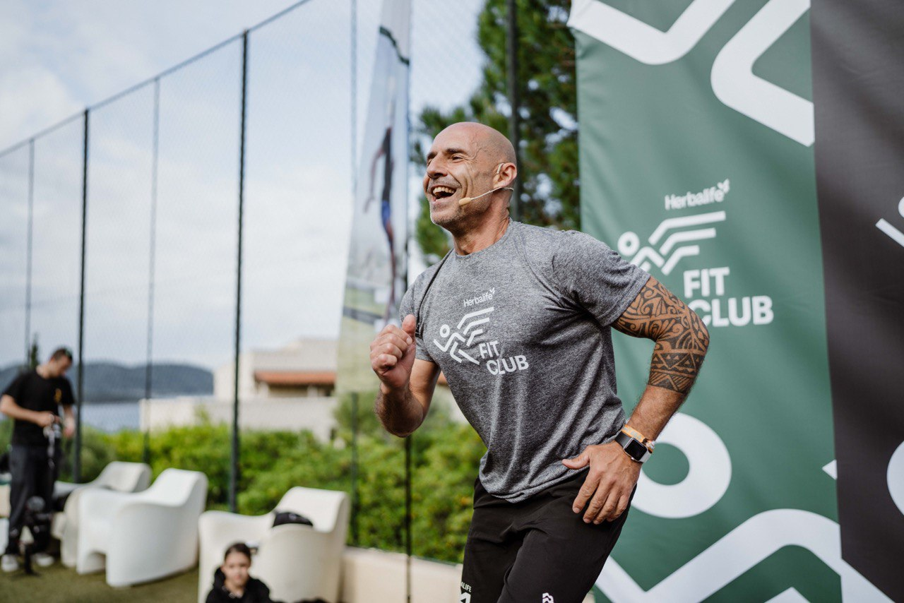
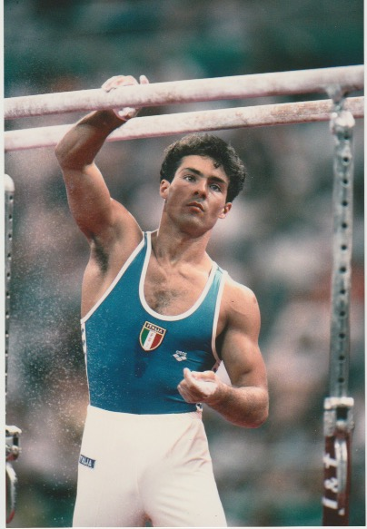
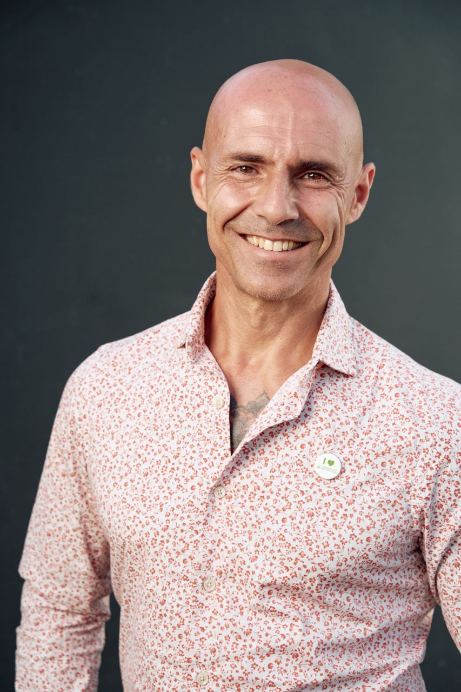

Ex Olimpionico, oggi Mentore del Benessere Fisico ed Economico
Sono Alex, ex Olimpionico e oggi aiuto le persone a ritrovare energia, forma fisica e libertà economica.
Ho partecipato alle Olimpiadi di Barcellona 1992 nella ginnastica artistica e ho vinto il Campionato del Mondo di Aerobica nel 1996 e 1997.
Ho iniziato Herbalife per un guadagno extra, ma mi ha dato molto di più: ho scoperto il significato e l’importanza della libertà finanziaria. Sono entusiasta dei valori su cui è fondata l’azienda: meritocrazia, stimoli, team, obiettivi chiari e un ambiente produttivo e motivante. Oggi ho una visione nuova del futuro e la possibilità di creare abbondanza per la mia famiglia e per chi lavora con me.
Mentoring individuale e di gruppo, supporto personalizzato, guida passo passo, formazione online, eventi dal vivo e accesso a una community globale ispirata al miglioramento fisico ed economico.
 Prenota una consulenza su WhatsApp